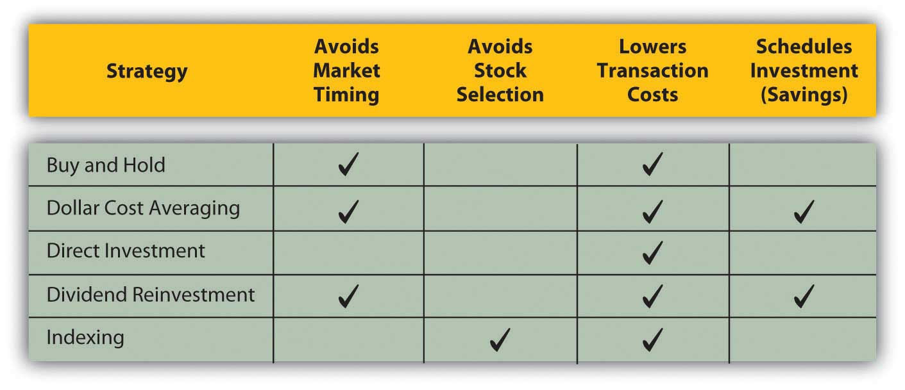

The best stock strategy is to know what you are looking for (i.e., what kind of stock will fulfill the role you want it to play in your portfolio) and to do the analyses you need to find it. That is easier said than done, however, and requires that you have the knowledge, skill, and data for stock analysis. Commonly used general stock strategies may be long term (returns achieved in more than one year) or short term (returns achieved in less than one year), but the strategies you choose should fit your investing horizon, risk tolerance, and needs. An important part of that strategy, as with financial planning in general, is to check your stock investments and reevaluate your holdings regularly. How regularly depends on to long- or short-term horizon of your investing strategies.
Long-term strategies favor choosing a long-term approach to avoid the volatility and risk of market timing. For individual investors, a buy-and-hold strategyThe long-term strategy of investing and holding without trading. can be effective over the long run. The strategy is just what it sounds like: you choose the stocks for your equity investments, and you hold them for the long term. The idea is that if you choose wisely and your stocks are well diversified, over time you will do at least as well as the stock market itself. Though it suffers through economic cycles, the economy’s long-term trend is growth.
By minimizing the number of transactions, you can minimize transaction costs. Since you are holding your stocks, you are not realizing gains and are not paying gains tax. Thus, even if your gross returns are not spectacular, you are minimizing your costs and maximizing net returns. This strategy is optimal for investors with a long horizon, low risk tolerance, and little need for liquidity in the short term.
Another long-term strategy is dollar-cost averagingThe strategy of investing regular dollar amounts at regular intervals in one security.. The idea of dollar-cost averaging is that you invest in a stock gradually by buying the same dollar amount of the same stock at regular intervals. This is a way of negating the effects of market timing. By buying at regular intervals, you will buy at times when the price is low and when it is high, but over time your price will average out. Dollar-cost averaging is a way of avoiding a stock’s price volatility because the net effect is that you buy the stock at its average price.
An investor uses dollar-cost averaging when regular payroll deductions are made to fund defined contribution retirement plans, such as a 401(k) or a 403b. The same amount is contributed to the plan in regular intervals and is typically used to purchase the same set of specified assets.
A buy-and-hold or dollar-cost averaging strategy only makes sense over time because both assume a long time horizon in order to “average out” volatility, making them better than other investment choices. If you have a long-term horizon, as with a retirement plan, those strategies can be quite effective. However, as the most recent decade has shown, market or economic cycles can be long too, so you need to think about whether your “long-term” horizon is likely to outlast or be outlasted by the market’s cycle, especially as you near your investment goals.
Direct investment and dividend reinvestment are ways of buying shares directly from a company without going through a broker. This allows you to avoid brokerage commissions. Direct investmentA real estate investment in which you are the owner and manager of property. means purchasing shares from the company, while dividend reinvestmentThe practice of using dividends to automatically purchase additional shares. means having your dividends automatically invested in more shares (rather than being sent to you as cash). Dividend reinvestment is also a way of building up your equity in the stock by reinvesting cash that you might otherwise spend.
The advantage of direct investment and dividend reinvestment is primarily the savings on brokers’ commissions. You can also buy fractional shares or less than a whole share, and there is no minimum amount to invest, as there can be with brokerage transactions. The disadvantage is that by having funds automatically reinvested, you are not actively deciding how they should be invested and thus may be missing better opportunities.
IndexingThe strategy of using index funds to achieve diversification rather than specifically selecting individual securities. is a passive long-term investment strategy to invest in index funds as a diversified asset rather than select stocks. Instead of choosing individual large cap companies, for example, you could invest in Standard & Poor’s (S&P) 500 Index fund, which would provide more diversification for only one transaction cost than you could get picking individual securities. The disadvantage to indexing is that you do not enjoy the potential of individual stocks producing above-average returns.
Figure 15.7 "Long-Term Stock Strategies" summarizes long-term stock strategies.
Figure 15.7 Long-Term Stock Strategies
Short-term stock strategies rely on taking advantage of market timing to earn above-average returns. Some advisors believe that the stock market fluctuates between favoring value stocks and favoring growth stocks. That is, the market will go through cycles when value stocks that are temporarily underpriced will outperform stocks of companies poised for higher growth, and vice versa. If true, you would want to weight your portfolio with growth stocks when they are favored and with value stocks when they are favored.
This value-growth weighting strategy relies on market timing, which is difficult for the individual investor. It also relies on correctly identifying growth and value stocks and market trends in their favor, complicating the process of market timing even further.
Day tradingA short-term strategy for taking advantage of excessive volatility. is a very short-term strategy of taking and closing a position in a day or two. Literally, it means buying in the morning and selling in the afternoon. Day trading became popular in the 1990s when stock prices were riding the tide of the tech stock bubble. At that time it was possible to hold a stock for just a few hours and earn a gain. Technology, especially the Internet, also made real-time quotes and other market data available to individual investors at a reasonable cost. At the same time, Internet and discount brokers drove down the costs of trading.
Day trading declined, but did not die, after the tech bubble burst. It turns out that in a bubble, any strategy can make money, but when market volatility is more closely related to earnings potential and fundamental value, there iis no shortcut to doing your homework, knowing as much as possible about your investments, and making appropriate strategic choices for you.
Common long-term strategies try to maximize returns by